User Documentation¶
General Workflow¶
Mention which fields exist all in the flow and what they are, especially fuel
Images for every node
Nodes¶
Mention node tree preset here
Simulation¶
{kind=link}
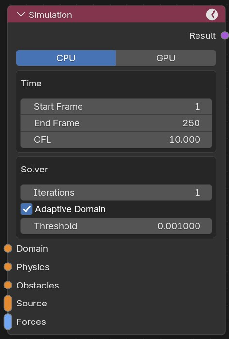
This is the core node of every simulation. It controls the frame range for your simulation and general sovler parameters.
- CPU/GPU
Lets you choose if you want to simulate on CPU or GPU. Only Nvidia GPUs are supported. If no compatible GPU is found, the GPU button will be unavailable.
- Start Frame
The frame at which the simulation starts.
- End Frame
The frame at which the simulation ends.
- CFL
This setting is very important. It determins how big or small the time steps of your simulation are. The solver has to simulate many more substeps than the frames in your scene. Larger CFL values mean bigger time steps which means the solver is faster. In many cases gowing for a big value here is good since it decreases the simulation time. In some occasions the visual quality will suffer under big CFL numbers. Refer to best practices for more information.
- Itterations
Number of pressure itterations. Usually the default of ten is fine. Smaller values can be faster but become unstable. Larger values are more stable but take longer.
- MacCormack Factor
For the purpose of this factor refer to the theory documentation. In general larger values make the flow more swirly and detailed, but can introduce artefacts.
- Adaptive Domain
Similar to Blenders native adaptive domain setting. Only simulates cells containing smoke, fuel or fire. Can greatly improve performance when activated in many cases. In some cases it is worth it to run it off, refer to the best practice section.
- Threshold
Threshold for when a cell is considered empty for the adaptive domain.
Domain¶
{kind=link}
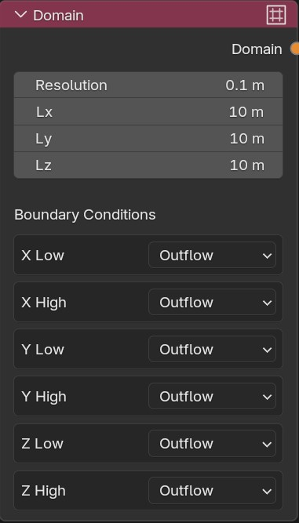
This node controls the size and resolution of your simulation domain. The domain is the area in which the simulation takes place.
- Resolution
The grid size used in the simulation. The grid size is the same in every direction.
- NX
Number of grid cells in x direction.
- NY
Number of grid cells in y direction.
- NZ
Number of grid cells in z direction.
- Boundary Conditions
Lets you choose the boundary conditions for each face of your simulation domain. Outflow: fluid can leave the domain. Inflow: fluid can enter the domain at a given velocity. Slip Wall: frictionless wall. Wall: wall with friction
Physics¶
{kind=link}
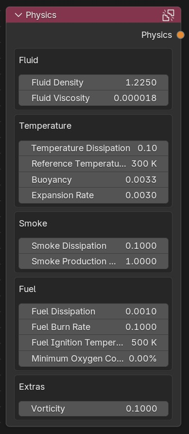
This node controls the general physics parameters of the simulation.
- Fluid Density
The density of the fluid. By default this is the density of air at room temperature.
- Fluid Viscosity
The viscosity of the fluid. By default this is the viscosity of air at room temperature.
- Temperature Dissipation
The rate at which temperature dissipates. Higher values mean faster dissipation.
- Reference Temperature
Air cooler than this temperature will sink down, while warmer air will rise.
- Bouyancy
Amount of bouancy. Increasing this value means warm air will rise faster and cold air will sink faster.
- Expansion Rate
How much warm air expands. Increasing this leads to more expansion due to heat.
- Smoke Dissipation
The rate at which smoke dissipates. Higher values mean faster dissipation.
- Smoke Production
How much smoke is produced when burning.
- Fuel Dissipation
The rate at which fuel dissipates. Higher values mean faster dissipation.
- Fuel Burn Rate
How quickly fuel burns away when ignited. Higher values mean faster burning.
- Fuel Ignition Temperature
If a cell contains fuel and the temperature is higher than this value, the fuel will ignite and produce flame and smoke.
- Minimum Oxygen Concentration
Minimum oxygen concentration required for fuel to burn. Oxygen concentration is approximated as 100 % minus the local smoke concentration, so higher smoke concentration leaves less oxygen available for combustion.
- Vorticity
Amount of extra vorticity in the simulation. Zero is physically accurate, but usually a small extra amount looks better.
Viewer¶
{kind=link}
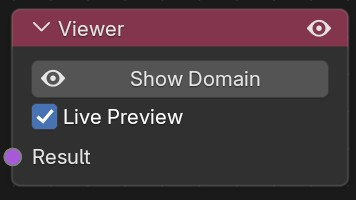
This node lets you view the simulation domain in the viewprt.
- Show/Hide Domain
Shows or hides the domain.
- Live Preview
When activated the simulation can be seen in the viewport while simulating.
Output¶
{kind=link}
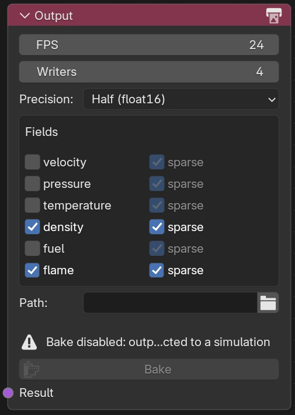
This node lets you specify the output of your simulation. It is worth paying some attention here, since simulations can create large amounts of data. Only save what you really need.
- FPS
The frame rate at which data is saved. Defaults to your scene frame rate.
- Writers
Amount of Writer CPU processes. Especially when simulating on GPU large amounts of data is calculated fast and needs additional compute power to be saved. Usually the default value of four is fine.
- Precision
The floating point precision of the saved data. Usually float16 is fine. Only in rare occasions float32 might be necessary.
- Fields
Lets you select which of the fields available you want to save. The additional checkbox “sparse” can reduce the file size significantly in fields like fuel, flame and density since they usually do not fill the complete domain. If you select sparse for velocity, temperature or pressure the data is only saved in fields that also contain density. Be aware that in a simulation without any smoke a sparse velocity field is empty.
- Path
Path on your disk where to save the data. You can use the usual Blender file browser.
- Bake/Free Bake
Bake: Starts the simulation Free Bake: Deletes the baked data
Obstacle¶
{kind=link}
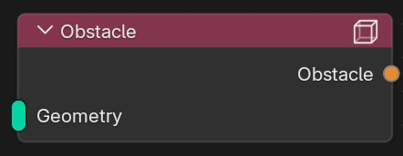
This node turns geometry into an obstacle. It expects geometry node as input and accepts multiple inputs.
Source¶
{kind=link}
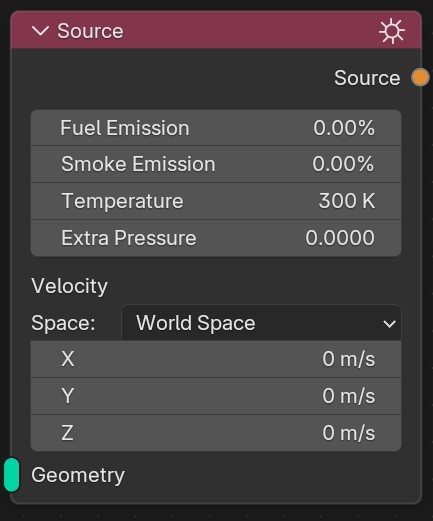
The Source node defines where fluid, smoke, temperature, pressure and velocity are spawned into the simulation. It expects a geometry node as input and accepts multiple inputs.
- Fuel Concentration
Fuel concentration spawned within the source. This value is specified in percent and limited to the range 0 to 100.
- Smoke Concentration
Smoke concentration spawned within the source. This value is specified in percent and limited to the range 0 to 100.
- Temperature
Temperature spawned within the source.
- Extra Pressure
Additional source term for the pressure solve. Positive values add extra pressure influence inside the source region, negative values remove it.
- Space
Choose whether the source velocity is interpreted in world coordinates or in the local coordinate system of each linked geometry object. With multiple geometry inputs in local space, each object applies the same authored velocity vector in its own local axes.
- Velocity
Velocity vector enforced within the source. Important: if all velocity values are zero, the source does not affect the velocity field at all. When you want to enforce zero velocity somewhere, use the obstacle node.
Geometry¶
{kind=link}
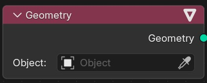
Simple node that lets you pick geometry. Can be plugged into the source or obstacle node.
Force-Constant¶
{kind=link}
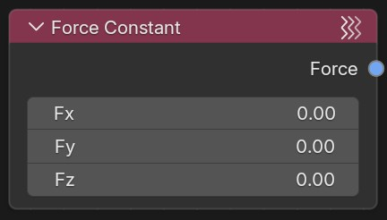
Adds constant forcing to the whole domain.
- Fx
Strength of force in x-direction
- Fy
Strength of force in y-direction
- Fz
Strength of force in z-direction
Force-Turbulence¶
{kind=link}
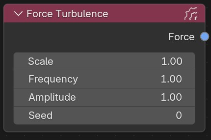
Adds turbulent forcing to the domain.
- Scale
Controls the scale of the introduced turbulence, larger values mean larger turbulent structures.
- Frequency
How quickly the turbulence field alternates. Larger values alternate quicker
- Amplitude
Amplitude of turbulence
- Seed
Random seed for turbulence field generation.
Force-Swirl¶
{kind=link}
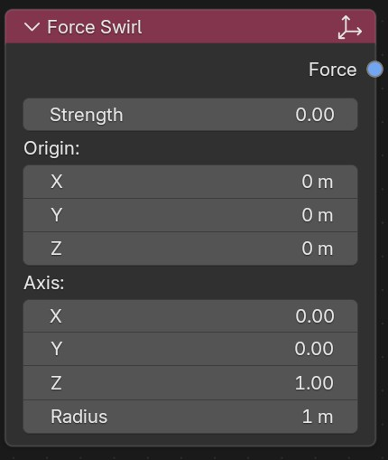
Adds swirly forcing to your simulation.
- Strength
How strong the swirl is supposed to be.
- Origin
Origin point of the swirl motion.
- Axis
Axis for the swirl. The flow will rotate around the line defined by Axis and Origin.
- Radius
Radius within which the swirl motion should be applied
Force-Point¶
{kind=link}
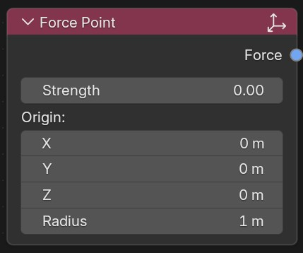
Adds a point force that can attract flow or push it away.
- Strength
Negative values mean attraction, positive pushing the flow away.
- Origin
Origin of the point force.
- Radius
Radius at which the force is still in effect.